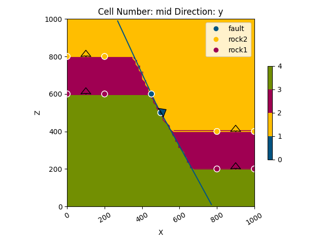

Note
Go to the end to download the full example code
Model 5 - Fault¶
This script demonstrates how to create a simple fault model with constant offset using GemPy, a Python-based, open-source library for implicit geological modeling.
# Import necessary libraries
import gempy as gp
import gempy_viewer as gpv
import numpy as np
from gempy_engine.core.data.stack_relation_type import StackRelationType
# sphinx_gallery_thumbnail_number = 2
Generate the model Define the path to data
data_path = 'https://raw.githubusercontent.com/cgre-aachen/gempy_data/master/'
path_to_data = data_path + "/data/input_data/jan_models/"
# Create a GeoModel instance
data = gp.create_geomodel(
project_name='fault',
extent=[0, 1000, 0, 1000, 0, 1000],
refinement=6,
importer_helper=gp.data.ImporterHelper(
path_to_orientations=path_to_data + "model5_orientations.csv",
path_to_surface_points=path_to_data + "model5_surface_points.csv"
)
)
# Map geological series to surfaces
gp.map_stack_to_surfaces(
gempy_model=data,
mapping_object={
"Fault_Series": 'fault',
"Strat_Series": ('rock2', 'rock1')
}
)
# Define fault groups
data.structural_frame.structural_groups[0].structural_relation = StackRelationType.FAULT
data.structural_frame.fault_relations = np.array([[0, 1], [0, 0]])
# Compute the geological model
gp.compute_model(data)
geo_data = data
Surface points hash: 8fe9250462c3e65080818a84d29925378664f6be46301dcdb42ed4047aa3fe6f
Orientations hash: 58d1d28be0c52dfdcedf36c9adc3b231e67d6923554159d6484dba589b0bfc5e
Setting Backend To: AvailableBackends.PYTORCH
Plot the initial geological model in the y direction
gpv.plot_2d(geo_data, direction=['y'], show_results=False)
<gempy_viewer.modules.plot_2d.visualization_2d.Plot2D object at 0x7f00805036a0>
- 
<gempy_viewer.modules.plot_3d.vista.GemPyToVista object at 0x7f0080574e50>
Total running time of the script: (0 minutes 1.151 seconds)